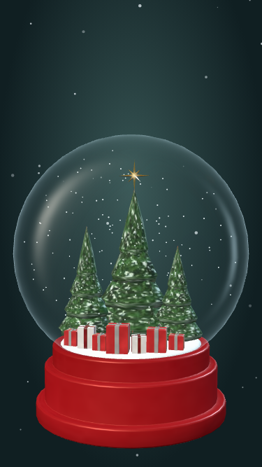
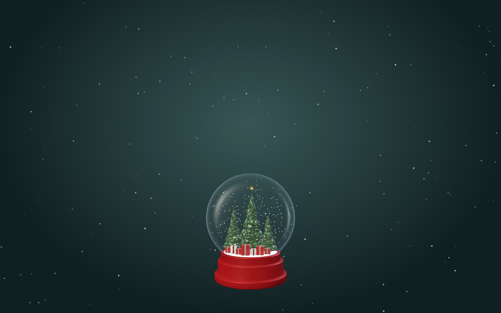
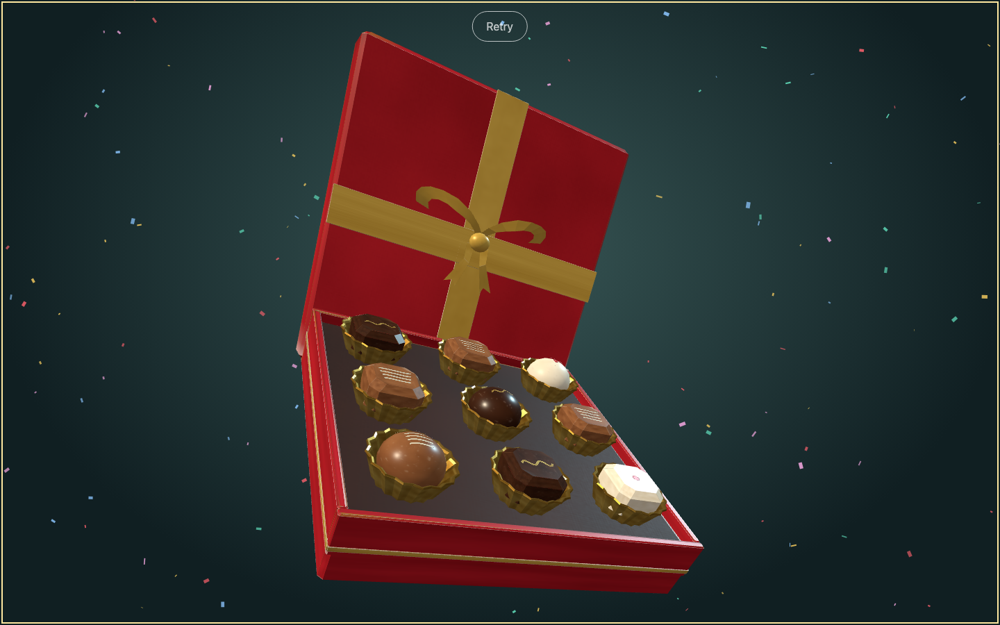

You are a front-end developer experienced with Three.js and browser-based interactive graphics. Build the interactive 3D Christmas globe on the existing
x-mass-globe.htmlpage.Implement the following in
x-mass-globe.html:
- Interactive 3D globe rendered with Three.js, displaying a Christmas-themed globe as the centerpiece of the page. Use the page's existing structure and styling; add the Three.js setup (scene, camera, lighting, renderer) within it.
- Snow animation inside the globe, with particles falling continuously and looping smoothly, so the scene feels like a classic snow globe.
- Desktop interaction: when the user clicks the globe, it shakes. The shake should read as a physical snow-globe motion: a brief, decaying oscillation of the globe with the snow particles reacting to it, settling back to rest.
- Mobile and tablet interaction: when the user shakes the device, the globe shakes the same way. Use the device motion (accelerometer) events, request permission where the browser requires it (such as iOS Safari), and throttle so one physical shake triggers a single shake animation rather than many.
Keep the implementation self-contained in this page unless a dependency is clearly needed; load Three.js from a standard CDN import or the library the page already uses. Ensure the scene resizes correctly with the window and that the animation runs smoothly on both desktop and mobile without leaking memory from repeated shakes or resizes.
The page should work on desktop, tablet, and mobile, and the click shake and motion shake should produce the same visual effect.
Remove button controls, move model to the bottom of the page, add snow effect for the whole page
User should be able to rotate globe on desktop and mobile. Only horizontaly.
add more realistic light to the globe to improve 3D effect of the glass
When globe shakes, move randomly presents inside.
On mobile devices make globe 90% of viewport vidth
With each next shake presents should move higher, but not out of glass.
Presents should move like in vacuum, slowly.
Synchronize gloab shaking and presents movement. Assume there is a water insie
Presents should fall in random places after shaking, not the initial ones
when presents reach the top of the glob 3 times, the random present goes through the glass, scaled (3x), and slowly rotate. Shaking is not available for globe at this state.
After 3 seconds of selected product rotating, move the globe out off screen (down) and move this present to the center of the screen and scale it so it's 90% of screen width.
Make selected 50% of the viewport width on last step.
If user cliks or tap on selected present, scale it down to 0 and show one random model from x-mass-presents directory instead. Then add confetti effect to the page instead of snow. Use should be able to rotate the final present model
When User see his present, show "Retry" button at the top of the screen. White text, white border, opacity 70%. This button should reload the page.
Let's adjust a bit. Presents should reach the glass ones, not 3 times.
Next, make presents rotate in random directions while shaking and make the final present 50% of viewport.
Use also should be able to rotate the final opened present in all directions
The scene places the Christmas diorama at the bottom and adds snowfall across the viewport. Click, keyboard and device motion share the rocking and snow-agitation routine. Horizontal drag and arrow keys rotate the globe about its vertical axis.
Three.js 0.187.0 renders the model and a dynamic point cloud. A fixed 2D canvas draws ambient snow using the same clock. Both entry points contain the same inline implementation. mountAnimation resolves to an object with play, pause and destroy methods. CONFIG holds camera, performance, shake and sensor settings.
The glass material uses its surface normals and viewing direction to reflect warm and cool studio lights. Reflection strengthens at grazing angles while the center stays clear. The model root owns the horizontal rotation, and its child pivot handles the shake. Pointer movement locks to the dominant axis after a short threshold, which separates drags from tap and shake gestures. The ten presents get individual height, timing, direction, pitch, yaw and roll on each shake. Their rise peaks near the end of the 1.25-second rocking motion. The same rocking signal drives a delayed water current that moves and tips the presents. The current decays, and the gifts reach the snow by the end of the 4.8-second drift. A new shake blends from each present’s current pose. Each box and ribbon set shares the same transform while the two original meshes keep their draw calls. Successive shakes increase the nominal hop by 0.18 model units. At each frame, the narrowest vertical space among all box and ribbon vertices limits the shared lift. On descent each present moves toward a randomized landing spot, sampled near its authored region. The search keeps the box on the snow platform, checks the glass clearance for the box and bow, and avoids overlapping the other presents’ footprints. On the first shake that reaches the upper glass limit, a randomly selected box and bow become a separate mesh group. The group rises through the upper dome, grows to three times its size and spins slowly. The viewport expands above the globe to frame the finale. After a three-second hold at 3× scale, the globe slides below the viewport while the selected present moves to center. The projected silhouette is fitted to 50% of the viewport width as it rotates. This width can crop the top and bottom on short screens. Shake input is locked for the rest of the page session. The close-up wrapper is clickable and supports Enter or Space. The page loads only the chosen GLB, then shrinks the wrapper to zero. The reveal model grows to a projected width of 50% of the viewport, with a 90% height cap for tall models, and the ambient canvas switches from white snow to tumbling paper confetti. The user can rotate the opened model in any direction by mouse or touch. Four arrow keys provide pitch and yaw by keyboard. The trackball maps pointer positions to a sphere and applies the resulting rotation in camera space. A Retry button appears at the top once the revealed model is visible and reloads the page. Snow recycles at the dome boundaries. During the 1.25-second shake, a decaying envelope rocks the pivot and increases the fall and swirl of the snow. The camera frames the model from container bounds. On narrow screens it targets a projected silhouette of 90% of the viewport width. A vertical fit limit keeps the complete model visible on short screens. Reduced motion gets a still frame, and hidden, off-screen and paused scenes stop their render loop.
All activation routes enter the same shake function.
if (!running || shakeTime < settings.shakeDuration) return;
shakeTime = 0;The remaining shake time controls both rocking and snow agitation.
const remaining = 1 - shakeTime / settings.shakeDuration;
const envelope = remaining * remaining;Drawing buffer resolution follows the stage with a capped pixel ratio.
const pixelRatio = Math.min(window.devicePixelRatio || 1, settings.maxDpr);
renderer.setDrawingBufferSize(width, height, pixelRatio);Horizontal drag changes only the model root’s yaw.
rotateGlobe((event.clientX - drag.lastX) * settings.dragRotationSpeed);Reflection increases toward the glass silhouette.
float facing = clamp(dot(normal, viewDirection), 0.0, 1.0);
float fresnel = pow(1.0 - facing, 5.0);Cleanup aborts the event listeners and disconnects container observers.
events.abort();
sizeObserver.disconnect();
visibilityObserver.disconnect();From the repository root, run python3 -m http.server 8080 and open http://localhost:8080/x-mass-globe.html. Use HTTPS for mobile motion access. Adjust fallSpeed, shakeAngle, shakeDuration, desktopSnowCount and motionThreshold in the inline configuration. The README lists every configurable setting.
Chromium measured the globe at 90% of the viewport width in four portrait sizes from 320 to 414 pixels wide. A 667 × 375 landscape viewport used the height limit to show the full globe. Chromium also rendered the tablet and desktop layouts. The globe stage reached the bottom of the viewport, ambient snowfall animated, and the page had no separate buttons. Click hit testing, keyboard activation, reduced motion, a simulated permission request on first activation, motion debouncing and canvas teardown passed. Mouse and emulated touch drags changed only yaw, vertical mouse movement left yaw unchanged, and drag release did not shake the globe. A subsequent tap still shook it, and arrow-key rotation worked under reduced motion. The revised glass shader compiled without console errors. Screenshots show the warmer left reflection, cooler right reflection and a more visible rim at each viewport. Click and simulated device shakes produced different present poses. Progressive drift heights increased on successive shakes before reaching the glass limit. The globe, current and presents moved together during the active shake. The current decayed as the presents continued to settle after the 1.25-second rocking animation. They returned to the snow by 4.8 seconds. All ten gifts changed landing positions in each of 28 consecutive landing checks, with the sampled boxes retaining their original resting height. Restarting mid-drift preserved the sampled coordinates of every box and ribbon vertex. Across 28 shakes sampled at 161 points each, every box and ribbon vertex stayed at least 0.025 model units inside the nominal dome radius. A sampled box and ribbon maintained their relative distance through the hop. The geometry returned to its original positions at rest and when reduced motion was enabled during a shake. The desktop shake sample used six draw calls, 5,307 triangles and 260 points, with zero observed long tasks. Geometry and texture counts stayed at six and five across repeated shakes and resizes. The finale started on the first ceiling-reaching shake. The released box and bow rose above the glass, reached 3× scale and kept rotating. Click, keyboard and simulated device shakes were blocked. The escaped gift remained in view after portrait, landscape and desktop resizes. In the close-up, the globe stayed stationary throughout the three-second rotation hold, then moved below the viewport. The present’s measured silhouette spanned 50% of the width and was centered on both axes at 375 × 667 and 1440 × 900. The sampled desktop pose still cropped vertically at this width. A simulated reduced-motion preference change stopped the spin. Chromium opened a randomly selected model after a full desktop run and opened all five catalog models in touch tests. The wrapping scaled to zero, the ambient canvas switched to colored confetti, and desktop drag, emulated touch drag and arrow-key rotation worked. Only one catalog asset was requested per reveal. A vertical touch drag pitched the opened gift, a diagonal mouse drag changed its orientation on multiple axes, and the Up and Right keys rotated it on their respective axes. The ten gifts showed independent three-axis rotation with both yaw directions. All five revealed models measured 50% of the viewport width at 375 × 667. On wide viewports the height limit preserved the full silhouette when needed. Chromium verified the Retry button’s white text and border, 70% opacity and top placement at mobile and desktop widths. Clicking Retry reloaded the page and restored the starting globe. Browser testing used the installed copy of the pinned Three.js package, and the CDN module URL returned HTTP 200 separately. The Vite production build emitted the globe page and its GLB.



The palette complements the supplied model. The reaction is tuned for a brief hand-held shake with fewer snow points on narrow displays. The browser checks used synthetic sensor events. Permission and hardware sensitivity on physical iPhones, tablets and Android devices remain unverified.